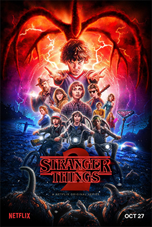

O desaparecimento recente de duas crianças em uma pequena cidade alemã remete à acontecimentos idênticos ocorridos há 33 anos e coloca quatro famílias no centro de uma teia de mistérios envolvendo uma misteriosa caverna, uma usina nuclear suspeita e um estranho homem recém chegado na cidade.A primeira temporada inicialmente acontece em 2019, mas se expande para incluir histórias em 1986 e 1953, com vários personagens sendo retratados em várias idades por vários atores.

Stranger Things
Em Stranger Things, quando Will (Noah Schnapp), um menino de doze anos, desaparece misteriosamente, o xerife Jim Hopper (David Harbour) inicia uma operação para encontrá-lo. Enquanto isso, Mike (Finn Wolfhard), Dustin (Gaten Matarazzo) e Lucas (Caleb McLaughlin), melhores amigos do garoto, decidem procurar Will por conta própria. Mas as investigações acabam os levando a experimentos secretos do governo e a uma peculiar menina perdida na floresta.